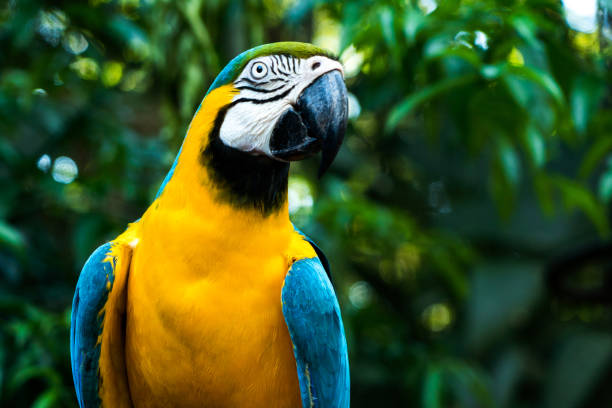
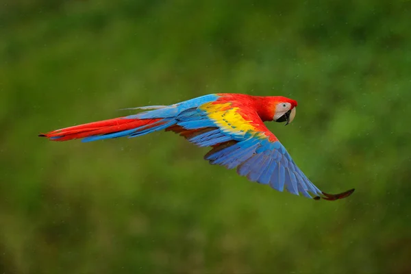
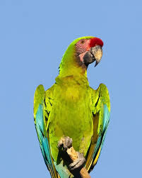
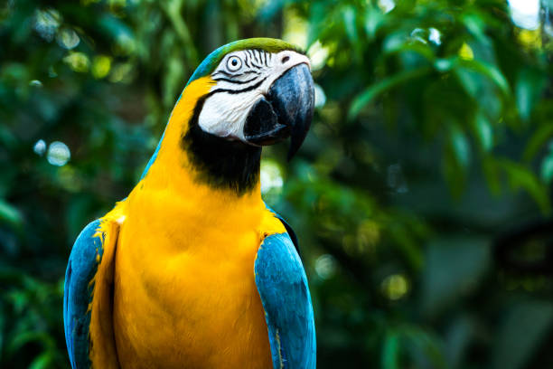
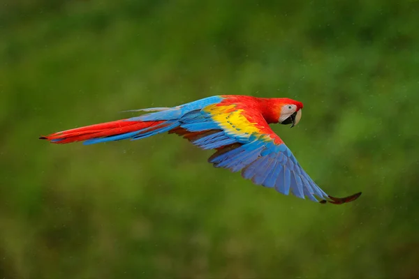
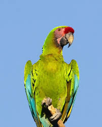

La Guacamaya Caraqueña


Las guacamayas Caraqueñas son aves emblemáticas del país, conocidas por su plumaje colorido y su carácter social. Habitan en zonas selváticas y tropicales donde encuentran alimento y lugares seguros para anidar. Las aves, que pueden crecer hasta un metro de largo, son un símbolo de Caracas, la ciudad capital construida en un valle separado del Mar Caribe por las montañas de la Cordillera de la Costa de Venezuela. Frecuentan terrazas y balcones de innumerables edificios en busca de alimento. La gente los alimenta e inunda las redes sociales con fotos de su brillante plumaje azul, verde, amarillo y rojo. (En general, los expertos desaconsejan darles comida a los animales salvajes, ya que puede dañarlos y crear una dependencia de los humanos. Pero tal consejo no parece ser bienvenido ni tomado en cuenta en este caso).
Guacamaya Caraqueña & Todo lo que Debes Saber
 




Las guacamayas viven en parejas o grandes bandadas. Se alimentan de frutos, semillas y arcilla. Sin embargo, la pérdida de hábitat está amenazando su supervivencia. Lo que hace únicos a los guacamayos de Caracas es su diversidad, explica la bióloga Malú González, profesora de la Universidad Simón Bolívar. “Entre guacamayos, loros y periquitos, tenemos 17 especies volando aquí”, agrega González. Esto incluye cuatro especies de guacamayos, todas nativas de Venezuela. La maracana (Ara severa), mayormente verde, es la más pequeña y la única de esta región central. El guacamayo bandera (Ara macao) cuya coloración amarilla, azul y roja que recuerda a la bandera tricolor nacional, es originaria de los llanos y la región amazónica. El guacamayo rojo y verde (Ara chloroptera) mantiene pequeñas poblaciones en el este y oeste del país. Estos dos últimos han sido desplazados en los cielos de Caracas por el guacamayo azul y amarillo (Ara ararauna)
Galería de Guacamaya Caraqueña
Contactos
¿Quieres aprender más sobre la guacamaya Caraqueña? Visita la página de Wikipedia